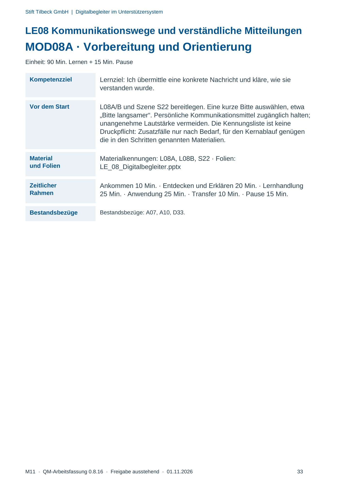
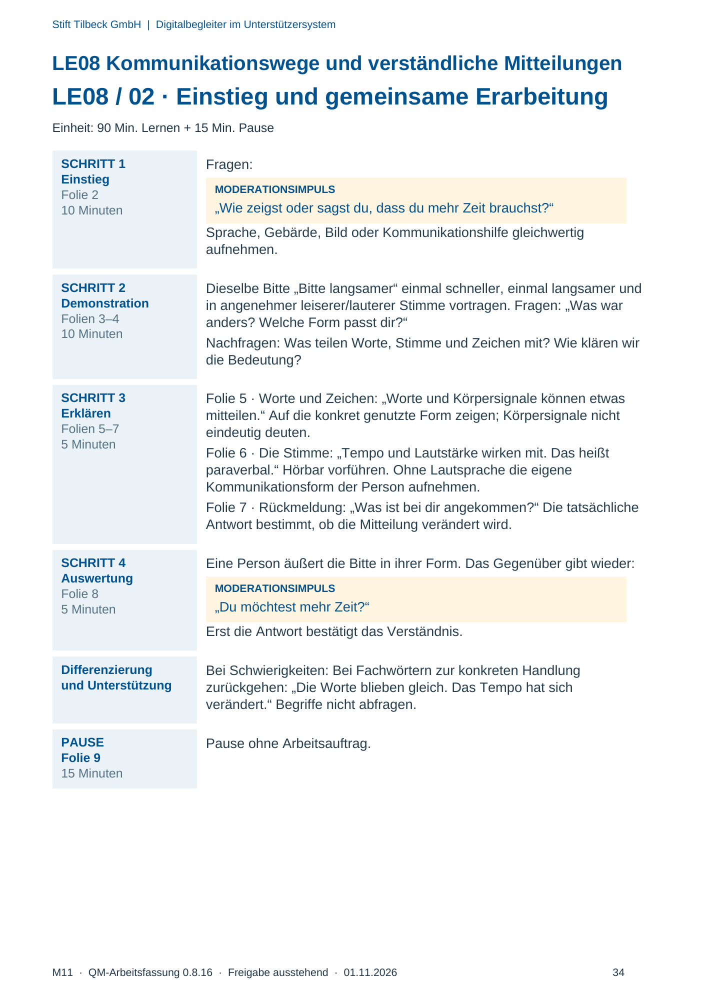
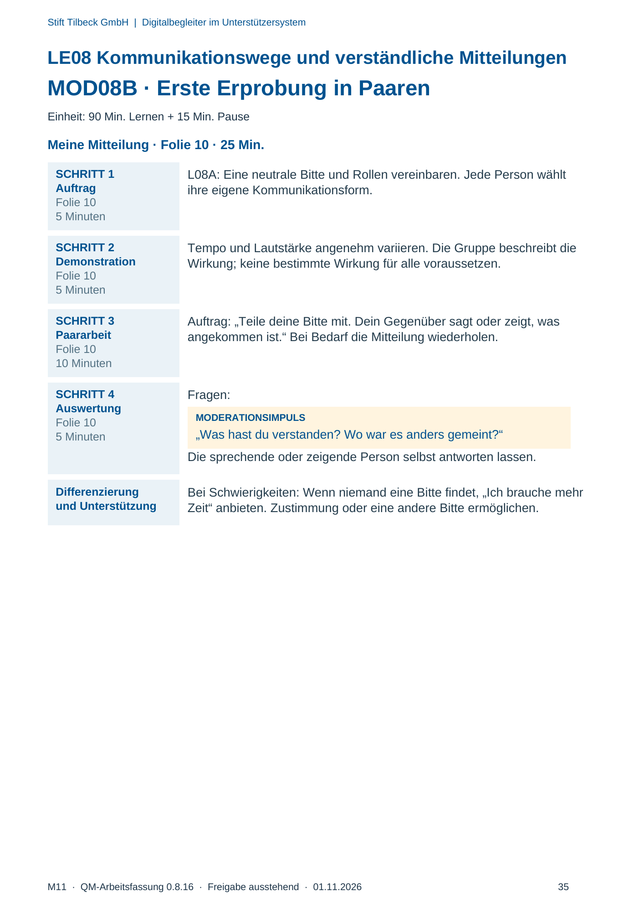
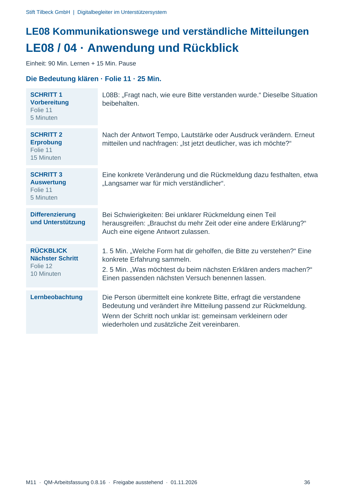

M11 · Originalseite 33, 34, 35, 36
Durchführungshilfe
Gezielte Original-Druckauswahl.
Fragen und Ankreuzfelder werden auf dem Ausdruck bearbeitet. Die Lesefassung speichert keine Antworten.
Lesefassung · Seite 33
Stift Tilbeck GmbH | Digitalbegleiter im Unterstützersystem
M11 · QM-Arbeitsfassung 0.8.16 · Freigabe ausstehend · 01.11.2026 33
LE08 Kommunikationswege und verständliche Mitteilungen
MOD08A · Vorbereitung und Orientierung
Einheit: 90 Min. Lernen + 15 Min. Pause
Kompetenzziel Lernziel: Ich übermittle eine konkrete Nachricht und kläre, wie sie
verstanden wurde.
Vor dem Start L08A/B und Szene S22 bereitlegen. Eine kurze Bitte auswählen, etwa
„Bitte langsamer“. Persönliche Kommunikationsmittel zugänglich halten;
unangenehme Lautstärke vermeiden. Die Kennungsliste ist keine
Druckpflicht: Zusatzfälle nur nach Bedarf, für den Kernablauf genügen
die in den Schritten genannten Materialien.
Material
und Folien
Materialkennungen: L08A, L08B, S22 · Folien:
LE_08_Digitalbegleiter.pptx
Zeitlicher
Rahmen
Ankommen 10 Min. · Entdecken und Erklären 20 Min. · Lernhandlung
25 Min. · Anwendung 25 Min. · Transfer 10 Min. · Pause 15 Min.
Bestandsbezüge Bestandsbezüge: A07, A10, D33.
Originalseite ansehen

Lesefassung · Seite 34
Stift Tilbeck GmbH | Digitalbegleiter im Unterstützersystem
M11 · QM-Arbeitsfassung 0.8.16 · Freigabe ausstehend · 01.11.2026 34
LE08 Kommunikationswege und verständliche Mitteilungen
LE08 / 02 · Einstieg und gemeinsame Erarbeitung
Einheit: 90 Min. Lernen + 15 Min. Pause
SCHRITT 1
Einstieg
Folie 2
10 Minuten
Fragen:
MODERATIONSIMPULS
„Wie zeigst oder sagst du, dass du mehr Zeit brauchst?“
Sprache, Gebärde, Bild oder Kommunikationshilfe gleichwertig
aufnehmen.
SCHRITT 2
Demonstration
Folien 3–4
10 Minuten
Dieselbe Bitte „Bitte langsamer“ einmal schneller, einmal langsamer und
in angenehmer leiserer/lauterer Stimme vortragen. Fragen: „Was war
anders? Welche Form passt dir?“
Nachfragen: Was teilen Worte, Stimme und Zeichen mit? Wie klären wir
die Bedeutung?
SCHRITT 3
Erklären
Folien 5–7
5 Minuten
Folie 5 · Worte und Zeichen: „Worte und Körpersignale können etwas
mitteilen.“ Auf die konkret genutzte Form zeigen; Körpersignale nicht
eindeutig deuten.
Folie 6 · Die Stimme: „Tempo und Lautstärke wirken mit. Das heißt
paraverbal.“ Hörbar vorführen. Ohne Lautsprache die eigene
Kommunikationsform der Person aufnehmen.
Folie 7 · Rückmeldung: „Was ist bei dir angekommen?“ Die tatsächliche
Antwort bestimmt, ob die Mitteilung verändert wird.
SCHRITT 4
Auswertung
Folie 8
5 Minuten
Eine Person äußert die Bitte in ihrer Form. Das Gegenüber gibt wieder:
MODERATIONSIMPULS
„Du möchtest mehr Zeit?“
Erst die Antwort bestätigt das Verständnis.
Differenzierung
und Unterstützung
Bei Schwierigkeiten: Bei Fachwörtern zur konkreten Handlung
zurückgehen: „Die Worte blieben gleich. Das Tempo hat sich
verändert.“ Begriffe nicht abfragen.
PAUSE
Folie 9
15 Minuten
Pause ohne Arbeitsauftrag.
Originalseite ansehen

Lesefassung · Seite 35
Stift Tilbeck GmbH | Digitalbegleiter im Unterstützersystem
M11 · QM-Arbeitsfassung 0.8.16 · Freigabe ausstehend · 01.11.2026 35
LE08 Kommunikationswege und verständliche Mitteilungen
MOD08B · Erste Erprobung in Paaren
Einheit: 90 Min. Lernen + 15 Min. Pause
Meine Mitteilung · Folie 10 · 25 Min.
SCHRITT 1
Auftrag
Folie 10
5 Minuten
L08A: Eine neutrale Bitte und Rollen vereinbaren. Jede Person wählt
ihre eigene Kommunikationsform.
SCHRITT 2
Demonstration
Folie 10
5 Minuten
Tempo und Lautstärke angenehm variieren. Die Gruppe beschreibt die
Wirkung; keine bestimmte Wirkung für alle voraussetzen.
SCHRITT 3
Paararbeit
Folie 10
10 Minuten
Auftrag: „Teile deine Bitte mit. Dein Gegenüber sagt oder zeigt, was
angekommen ist.“ Bei Bedarf die Mitteilung wiederholen.
SCHRITT 4
Auswertung
Folie 10
5 Minuten
Fragen:
MODERATIONSIMPULS
„Was hast du verstanden? Wo war es anders gemeint?“
Die sprechende oder zeigende Person selbst antworten lassen.
Differenzierung
und Unterstützung
Bei Schwierigkeiten: Wenn niemand eine Bitte findet, „Ich brauche mehr
Zeit“ anbieten. Zustimmung oder eine andere Bitte ermöglichen.
Originalseite ansehen

Lesefassung · Seite 36
Stift Tilbeck GmbH | Digitalbegleiter im Unterstützersystem
M11 · QM-Arbeitsfassung 0.8.16 · Freigabe ausstehend · 01.11.2026 36
LE08 Kommunikationswege und verständliche Mitteilungen
LE08 / 04 · Anwendung und Rückblick
Einheit: 90 Min. Lernen + 15 Min. Pause
Die Bedeutung klären · Folie 11 · 25 Min.
SCHRITT 1
Vorbereitung
Folie 11
5 Minuten
L08B: „Fragt nach, wie eure Bitte verstanden wurde.“ Dieselbe Situation
beibehalten.
SCHRITT 2
Erprobung
Folie 11
15 Minuten
Nach der Antwort Tempo, Lautstärke oder Ausdruck verändern. Erneut
mitteilen und nachfragen: „Ist jetzt deutlicher, was ich möchte?“
SCHRITT 3
Auswertung
Folie 11
5 Minuten
Eine konkrete Veränderung und die Rückmeldung dazu festhalten, etwa
„Langsamer war für mich verständlicher“.
Differenzierung
und Unterstützung
Bei Schwierigkeiten: Bei unklarer Rückmeldung einen Teil
herausgreifen: „Brauchst du mehr Zeit oder eine andere Erklärung?“
Auch eine eigene Antwort zulassen.
RÜCKBLICK
Nächster Schritt
Folie 12
10 Minuten
1. 5 Min. „Welche Form hat dir geholfen, die Bitte zu verstehen?“ Eine
konkrete Erfahrung sammeln.
2. 5 Min. „Was möchtest du beim nächsten Erklären anders machen?“
Einen passenden nächsten Versuch benennen lassen.
Lernbeobachtung Die Person übermittelt eine konkrete Bitte, erfragt die verstandene
Bedeutung und verändert ihre Mitteilung passend zur Rückmeldung.
Wenn der Schritt noch unklar ist: gemeinsam verkleinern oder
wiederholen und zusätzliche Zeit vereinbaren.
Originalseite ansehen
